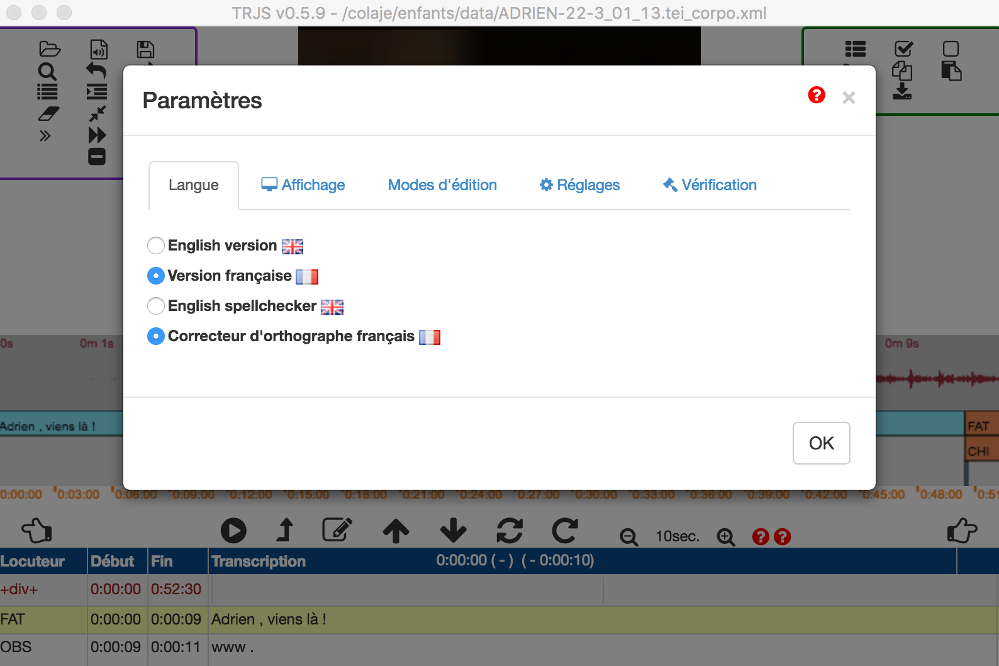
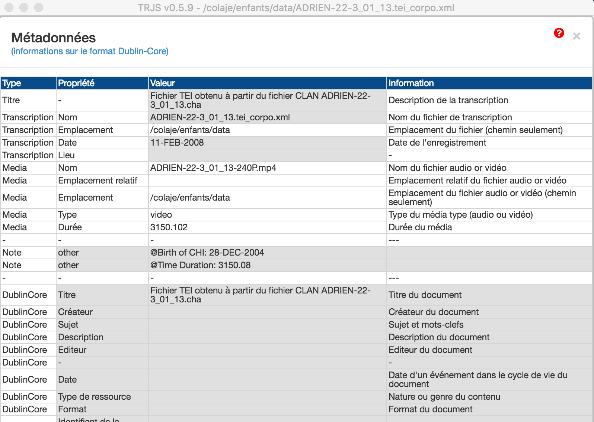

TranscriberJS permet de réaliser des transcriptions rapidement à partir d'un média vidéo ou audio. Il a été optimisé pour qu'il ne soit pas nécessaire d'utiliser de souris et permettre ainsi une utilisation efficace du clavier y compris pour manipuler la video ou le son et une transcriptions très rapide
TranscriverJS permet aussi une utilisation classique en utilisant la souris et en découpant les sons et images au préalable ou au fur et à mesure. TranscriberJS permet aussi d'aligner un texte brut ne présentant pas d'alignement préalable mais correctement divisé en locuteurs.
L'écran se divise en trois parties visibles en permanence:
Les paneaux de présentation et d'édition des paramètres s'affichent de manière optionnelle en cliquant sur "Params" ou "Search" (en haut à gauche de l'écran). Il y a 6 panneaux de paramètres pouvant s'afficher.
Le panneau "Params" se divise en cinq sous-panneaux. Chaque sous-panneau se déploie en cliquant dans un des sous-titres de panneau. Cliquer à nouveau sur le titre cache le panneau. Cliquer sur "Params" masque à nouveau tous les panneaux.
| Panneau params (surligné en rouge) | Sous-panneau metadata (surligné en rouge) |
|  |  |
Le panneau de recherche de motif et de masquage/démasquage des données s'affiche directement en cliquant sur "Search"
| TAB | Go to media time and Play / Pause |
| Shift TAB | Play from start of line/ Pause |
| F1 | Play / Pause |
| Alt F1 | Play from start of line/ Pause |
| Shift F1 | Go to media time and Play / Pause |
| Alt Left | Jump Backward |
| Alt Right | Jump Forward |
| F2 | Jump Backward |
| F3 | Jump Forward |
| F4 | Insert Time Start |
| F5 | Insert Time End |
| F6 | Insert blank line |
| Alt F6 | Insert line with time |
| F7 | Play current line |
| F8 | Continous play |
| Alt F2 | Bigger video |
| Alt F3 | Smaller video |
| Alt F4 | Slower video |
| Alt F5 | Faster video |
| Alt F7 | Play three lines |
| Alt F8 | Continous play & Jump |
| Up | Remonte à la ligne précédent |
| Down | Descend à la ligne suivant |
| Alt Up | Remonte au locuteur précédent (saute les lignes secondaires) |
| Alt Down | Descend au locuteur suivant (saute les lignes secondaires) |
| Tab | Change column to right |
| Shift Tab | Change column to left |
| Upper arrow | Go up one line |
| Lower arrow | Go down one line |
| Ctrl O | Open |
| Ctrl S | Save |
| Ctrl A | Select all |
| Ctrl L | Goto line |
| Ctrl F | Find |
| Ctrl Alt J | Split line |
| Ctrl R | Replicate line |
| Ctrl D | Delete line |
| Ctrl Alt D | Delete tier group |
| Ctrl J | Join line |
| Ctrl G | Create Div |
| Ctrl Alt G | Close Div |
| Ctrl I | Insert empty line with time == Alt F6 |
| Ctrl X | Insert blank line (without time) == F6 |
| Ctrl N | Set time on main line and goes to next line |
| Ctrl Atl N | Set time on current line and goes to next line |
| Enter | Ctrl I if insert mode; Ctrl N if replace mode |
| Alt 1 | First locutor |
| Alt 2 | Second locutor |
| ... | ... |
| Alt 9 | Ninth locutor |
| Alt Ctrl 1 | First template property |
| ... | ... |
| Alt Ctrl 9 | Ninth template property |
| Caractères phonétiques | Alt+Shift+Caractère SAMPA |
| Caractères phonétiques | Alt (ou Alt+Shift) + Caractère SAMPA |
| Alt A | ɑ |
| Alt E | ɛ |
| Alt O | ɔ |
| Alt 9 | œ |
| Alt 2 | ø |
| Alt @ | ə |
| Alt 0 | ə |
| Alt R | ʀ |
| Alt S | ʃ |
| Alt Z | ʒ |
| Alt N | ŋ |
| Alt H | ɥ |
| Alt J | ɲ |
| Alt T | θ |
| Alt D | ð |
| Alt I | ɪ |
| Alt Q | ɒ |
| Alt V | ʌ |
| Alt U | ʊ |
| Alt X | χ |
| Alt : | ː |
| Alt Shift A | ɑ̃ |
| Alt Shift E | ɛ̃ |
| Alt Shift 9 | œ̃ |
| Alt Shift N | ŋ |
| Alt Shift O | ɔ̃ |
| Alt Shift Q | æ |
Cliquer sur doc-technique.html pour continuer